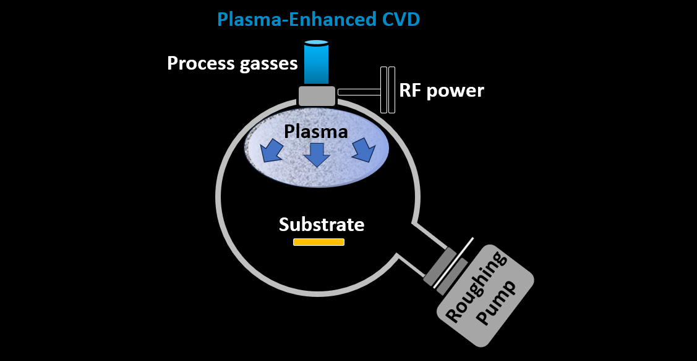
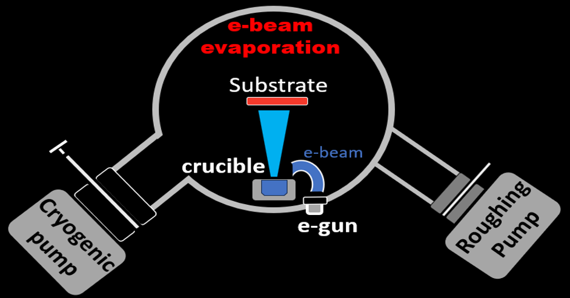
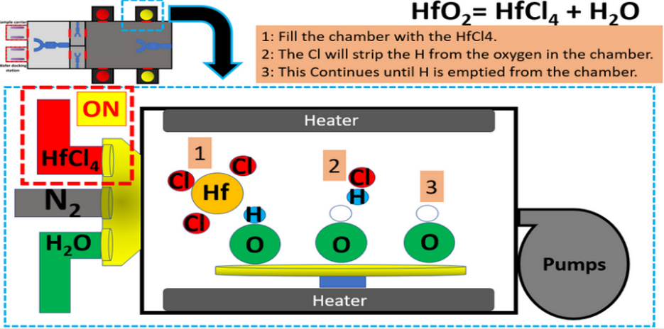
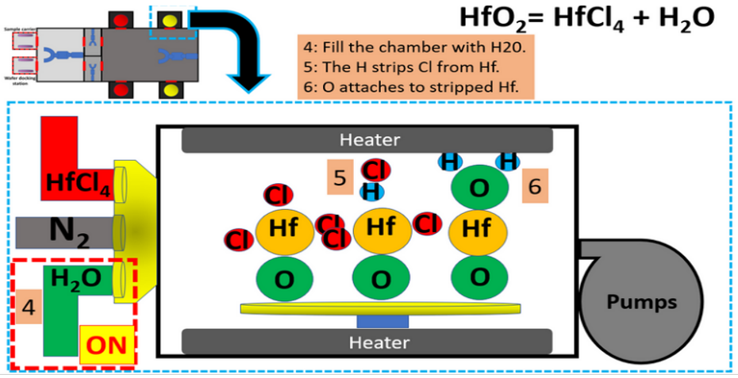
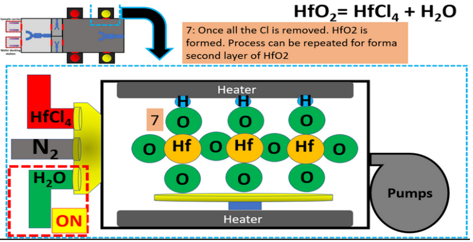

Industrial Process Engineering
Deposition recipe development, equipment ownership, qualification, production support, troubleshooting, and process improvement.
Vacuum Systems
Practical experience from manufacturing vacuum systems through high and ultra-high vacuum environments approaching 10⁻¹¹ Torr.
Advanced Thin Films
Experience across ALD, PECVD, e-beam evaporation, sputtering, thermal evaporation, CVD, MBE, and PLD.
Professional Thin-Film & Deposition Experience
My deposition experience includes direct industrial responsibility for semiconductor and optical coating processes, where the work extended beyond operating deposition equipment to owning the process and supporting its long-term manufacturing performance.
This included developing and adjusting recipes, understanding equipment behavior, evaluating deposited films, qualifying processes, supporting production, troubleshooting process excursions, and sustaining the tools used to manufacture the coatings.
- Atomic Layer Deposition (ALD) semiconductor process engineering at Intel
- Optical thin-film deposition and process development at Lockheed Martin
- PECVD Diamond-Like Carbon (DLC) process and equipment ownership
- E-beam evaporation, thermal evaporation, and sputtering
- Deposition recipe development and optimization
- Tool qualification, troubleshooting, maintenance, and upgrades
- Film characterization and process-performance evaluation
- Production work instructions and operator technical support
Process Development & Equipment Ownership
Thin-film process development requires understanding both the desired material or optical result and the behavior of the equipment used to create it.
- Translate film requirements into deposition recipes
- Establish pressure, power, temperature, gas-flow, and deposition-rate conditions
- Run engineering trials and characterize deposited films
- Adjust recipes based on measured film performance
- Evaluate chamber condition and process repeatability
- Qualify processes for manufacturing use
- Troubleshoot equipment and process excursions
- Support preventive maintenance and chamber recovery
- Develop operator instructions and production controls
- Support equipment upgrades and additional manufacturing capacity
Vacuum Systems & Thin-Film Process Physics
My deposition background spans a wide range of pressure regimes, from manufacturing processes operating at relatively higher vacuum pressures to research systems operating in ultra-high vacuum near 10⁻¹¹ Torr.
Working across these regimes provides a deeper understanding of how chamber condition, residual gases, pumping behavior, temperature, materials, and pressure influence film growth and equipment performance.
- Vacuum, high-vacuum, and ultra-high-vacuum process environments
- Pressure regimes spanning approximately 10⁻³ to 10⁻¹¹ Torr depending on process and equipment
- Rate-of-rise testing and chamber-integrity evaluation
- Distinguishing leaks, outgassing, contamination, and residual process gases
- Gas purity and controlled-reactant delivery
- Vacuum pumping and chamber recovery behavior
- Temperature behavior under reduced-pressure conditions
- Material stress and film response during pressure and temperature changes
- Controlled heating, cooling, pump-down, and venting
- Effects of chamber cleanliness on process stability and deposited-film quality
This vacuum-physics foundation is especially useful during troubleshooting, because similar pressure readings can result from very different physical conditions such as a true leak, water or solvent outgassing, contamination, incomplete pumping, or process-gas behavior.
Selected Deposition Technologies
My experience covers deposition methods with very different growth mechanisms, pressure regimes, materials, and manufacturing applications.
Atomic Layer Deposition (ALD)
Self-limiting surface chemistry provides precise thickness control and highly conformal films. My industrial ALD experience includes semiconductor process engineering and manufacturing support.
PECVD

Plasma Enhanced Chemical Vapor Deposition uses plasma-assisted chemistry to deposit films at reduced substrate temperatures. My experience includes PECVD-based DLC durable optical coatings.
E-Beam & Thermal Evaporation

Physical Vapor Deposition methods used across optical coatings, metallic films, and device fabrication. Experience includes industrial optical production and research applications.
Sputtering
Physical vapor deposition using energetic ions to remove material from a target and deposit it onto the substrate. Experience includes optical and thin-film manufacturing applications.
Molecular Beam Epitaxy (MBE)
Ultra-high-vacuum epitaxial growth with precise flux control. Graduate research included growth of ultrathin and monolayer transition-metal dichalcogenide materials.
CVD & Pulsed Laser Deposition
Research experience includes Chemical Vapor Deposition growth of carbon-based nanomaterials and Pulsed Laser Deposition of oxide materials.
Atomic Layer Deposition — Surface-Reaction Sequence
The sequence below illustrates the basic self-limiting chemistry of an ALD cycle. The example uses HfO₂ growth from alternating precursor exposures separated by purge steps.
1 — First Precursor

The first precursor reacts with available surface sites until the surface reaction reaches saturation.
2 — Second Precursor

After purging, the second precursor reacts with the modified surface and completes the second half-reaction.
3 — Layer Completion

Repeating the precursor-and-purge sequence builds film thickness through controlled surface reactions.
Research & Advanced Thin-Film Experience
My research background provided exposure to deposition regimes and materials beyond normal production environments, including ultra-high vacuum growth and nanoscale materials.
- MBE growth of ultrathin and monolayer VSe₂
- Ultra-high-vacuum surface and thin-film preparation
- PLD growth of oxide materials
- CVD growth of graphene and carbon nanotube materials
- Thermal evaporation of metallic electrodes
- Nanomaterial and thin-film characterization
- Experimental process development and parameter optimization
This research experience complements industrial process engineering by providing additional understanding of surface science, vacuum behavior, material growth, and the physical mechanisms behind thin-film formation.
Deposition Across Semiconductor & Optical Manufacturing
The same thin-film fundamentals apply across very different applications, while the required materials, equipment, pressure regimes, performance targets, and process controls can vary significantly.
- Semiconductor thin films and device structures
- Optical interference coatings
- Durable DLC optical coatings
- Metallic electrodes and device contacts
- Nanomaterials and research-scale thin films